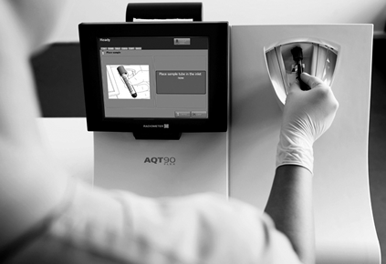

Aqt90 flex
Analizador de inmunoensayo para mediciones
de marcadores cardiacos

DESCRIPCIÓN:
El analizador AQT90 FLEX de Radiometer es un equipo de inmunoensayo con amplio panel cardiaco y marcadores de coagulación, infección y gestación, utilizando fluorescencia de resolución temporal para una alta sensibilidad en mediciones de sangre total o plasma. Está concebido para usarse en entornos de medicina crítica o en el laboratorio central.
CARACTERÍSTICAS:
El AQT90 FLEX combina la gran exactitud de medida que requieren las pruebas de cuidados críticos con la facilidad de manejo que se necesita en el trabajo de rutina. Permite realizar correlaciones plenas con los métodos reconocidos de laboratorio y tiene una alta sensibilidad analítica por 10 con la que se puede mantener una máxima exactitud con un mínimo esfuerzo, asegurando un diagnóstico correcto
El AQT90 FLEX cuenta con un sistema de control de calidad integrado para la evaluación continua del funcionamiento del analizador.
Mayor seguridad para el usuario, ya que el paquete de reactivos recoge automáticamente todos los residuos y los pocillos usados, el cual se desecha y se sustituye sin entrar en contacto con los residuos. Las muestras de sangre no requieren preparativos adicionales y se ingresan con tubos de vacío convencionales, sin riesgo de contaminación.
Uso amigable: El AQT90 Flex contiene una pantalla táctil a color con interfaz de usuario intuitiva y menú de pruebas personalizable.
Identificación de insumos y muestras mediante código de barras.
Con capacidad para almacenar hasta 2,000 resultados de pacientes.
Permite la incorporación continua de nuevos ensayos.
ESPECIFICACIONES TÉCNICAS:
Principio de funcionamiento: Los tests de AQT90 FLEX se basan en una química en la que todos los reactivos se presentan en estado seco dentro de un pocillo de test y la metodología de detección utilizada en todos los ensayos se basa en la fluorimetría de resolución temporal (TRF) con sensor de determinación de hematócrito incorporado para calcular la concentración real del analito en el plasma, sin modificar la muestra o ciclo de medición.
Hardware: Procesador lntel Celeron M 600 MHz con 512K L2 Cache, 1 GB RAM, 2 GB SolidState, pantalla táctil S.4" color TFT-LCD SOD x 600 SVGA, impresora térmica 4", lector óptico para ID, interfaz serie RS232, 3 conexiones USB 2.0, opcional· teclado externo, ratón externo y lector óptico externo, plataforma Windows XP Embedded.
Parámetros medidos:
• Troponina 1 (0.010-25 µg/L)-18 min.
• Troponina T (0.010-25 µg/L)-12 min.
• CKMB (2-500 µg/L)-18 min.
• Mioglobina (2-900 µg/L)-18 min.
• NT-proBNP (70-35,000 µg/L)-10 min.
• Dímero D (80-100,000 µg/L)-20 min.
• BhCG (2-5000 IU/L)-18 min.
• PCR (5-500 µg/L)-13 min.
• PCT en sangre total (0.12-100 ng/mL)-20 min.
• PCT en plasma (0.082-109 ng/mL)-20 min.
Medidas: 450 x 460 x 480 mm.
Peso: 35 kg.
Rendimiento: Hasta 30 determinaciones por hora, con capacidad para cargar hasta 240 tests. Permite seleccionar hasta 5 parámetros por muestra.
Tiempo de procesamiento: 18 minutos dependiendo de los parámetros.
Tipo de muestras: Sangre total y plasma.
Entrada de muestra: Compatible con tubos de vacío convencionales, sin riesgo de entrar en contacto con la sangre recolectada.
Lenguaje de reportes y programa: Español.
Conectividad: Comunicación con SIL/SIH.
Protocolos de nivel alto:
• ASTM.
• HL7.
• POCT 1-A.
Protocolos de nivel bajo: Serie ASTM, E13 94-91, Serial Raw.
Protocolos de nivel bajo: Red TCP/IP.
Disponible en varias modalidades: Venta, renta, comodato.
Contamos con servicios de capacitación, mantenimiento preventivo, mantenimiento correctivo, actualización tecnológica y control de calidad externo.
Disponibilidad de cartuchos, controles de calidad, papel. Programas y accesorios.
Registro: 0252E2010 SSA
DATOS COMPLEMENTARIOS: Para mayor información comunicarse a:
GRUPO Eólica, S.A. DE C.V.
|
Teléfono: (55) 5584-4699 |